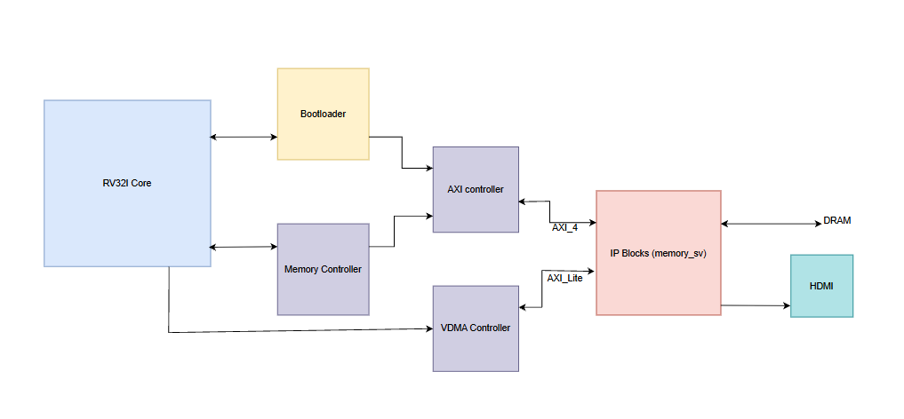
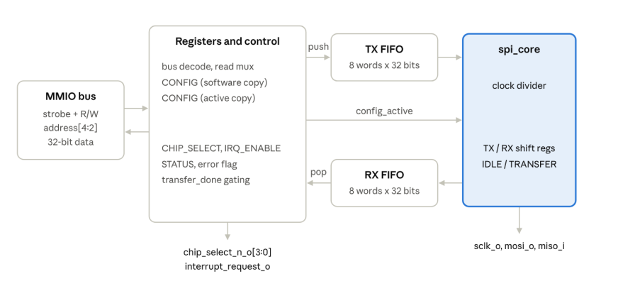

Portfolio
Things I've designed and built
Project photo
Featured
FPGA FIR Filter
Real-time audio filtering on a Spartan-7: 8 kHz audio streams in over UART, an HLS-built FIR filter processes every sample, and the result streams back.
Read more →Project photo

5-Stage RISC-V CPU
Pipelined RV32I processor on an AMD Spartan-7 that boots C programs over UART, runs them from DDR3 through 32 KB caches, and drives a 720p HDMI display.
Read more →Project photo

Programmable SPI Master
Memory-mapped SPI controller for SiliconJackets' RISC-V tapeout: software queues words in a FIFO, the hardware handles the protocol, and replies come back through a second FIFO.
Read more →Project photo
Accessible Gaming Headband
Headband that turns spatial game audio into haptic feedback for players with auditory disabilities, with head-tilt controls.
Read more →